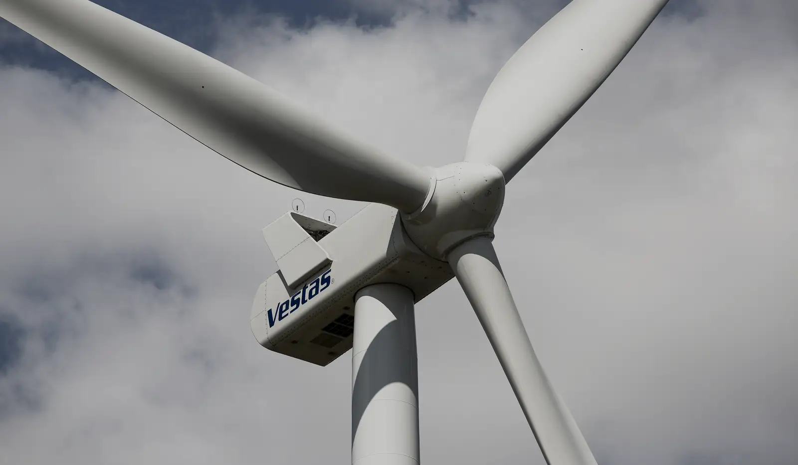
Skup szczotek węglowych, grafitowych i metalizowanych
Skup i recykling elementów węglowych, grafitowych oraz węglowo-metalowych z energetyki wiatrowej, kolei i przemysłu. Każdą partię wyceniamy indywidualnie, także na podstawie zdjęć.
lub zadzwoń, napisz na WhatsApp: +48 785 643 869
Profesjonalny skup surowców z energetyki wiatrowej, kolei i przemysłu
Specjalizujemy się w skupie zużytych oraz nowych elementów węglowych, grafitowych i węglowo-metalowych wykorzystywanych w urządzeniach elektrycznych, generatorach, silnikach trakcyjnych oraz systemach odbioru prądu.
Interesują nas materiały z bieżącej eksploatacji, przeglądów technicznych, remontów, modernizacji i likwidacji urządzeń - w każdej ilości, od pojedynczych partii warsztatowych po dostawy hurtowe.
Skup szczotek węglowych z turbin wiatrowych
Kupujemy szczotki stosowane w generatorach turbin wiatrowych, w szczególności w generatorach dwustronnie zasilanych DFIG oraz innych układach elektrycznych.
- szczotki węglowe i grafitowe
- szczotki grafitowo-miedziane i miedziano-węglowe
- szczotki węglowo-metalowe
- szczotki uziemiające (grounding brushes)
- szczotki prądowe generatorów
- szczotki z przewodami miedzianymi i końcówkami
- szczotki ze srebrem, miedzią, cyną, cynkiem
- zużyte, uszkodzone, nowe i nieużywane
Szczególnie interesują nas materiały z generatorów Vestas, ABB oraz innych producentów urządzeń energetyki wiatrowej.
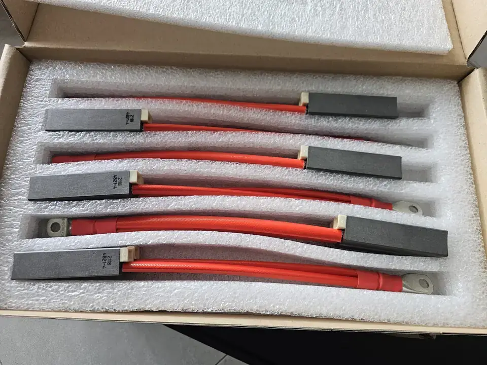
- Vestas
- ABB
- VND
- Weier
- Leroy Somer
- Elin
- Loher
- Siemens
- Gamesa
Skup pierścieni ślizgowych generatorów
Prowadzimy skup pierścieni ślizgowych (slip rings) oraz elementów układów szczotkowych stosowanych w generatorach turbin wiatrowych i urządzeniach przemysłowych.
- zużyte i uszkodzone pierścienie ślizgowe
- zespoły stykowe
- komponenty zawierające miedź i inne metale
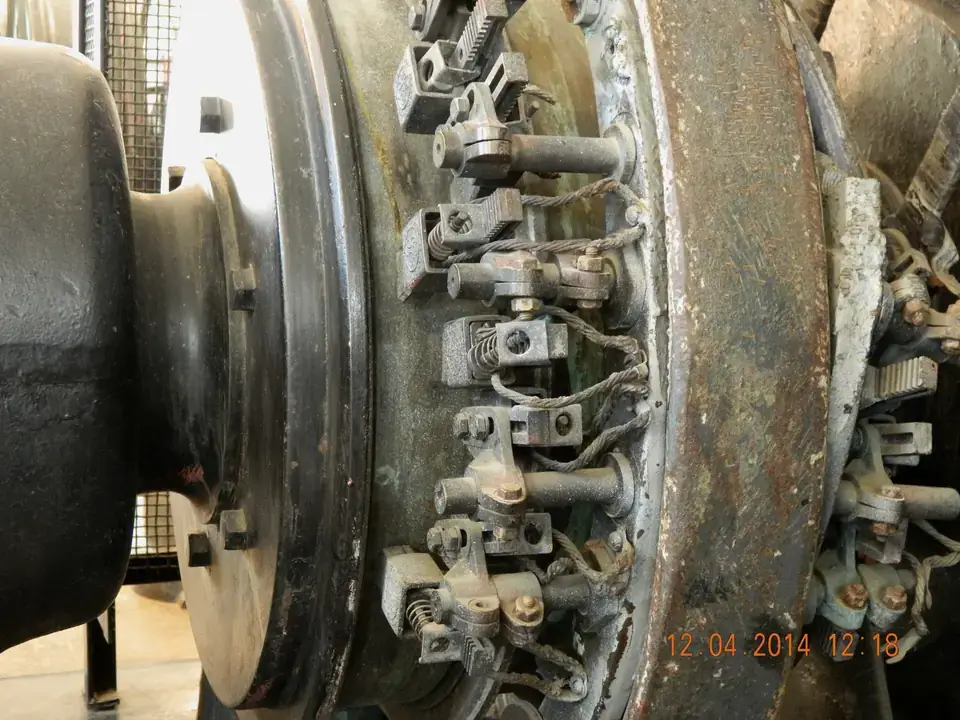
Skup i recykling grafitu kolejowego - nakładki pantografów, ślizgacze, szczotki węglowe
Prowadzimy specjalistyczny skup i recykling odpadów grafitowych oraz węglowych z sektora kolejowego, komunikacji miejskiej (tramwaje, trolejbusy) i przemysłu ciężkiego. Odbieramy zużyte elementy z przeglądów taboru (P1-P5) w ilościach hurtowych (tonowych) i mniejszych partiach warsztatowych.
Działamy na terenie całej Polski: własny transport odpadów, pełna obsługa w systemie BDO (wystawiamy KPO) oraz uczciwa wycena uwzględniająca zawartość metali kolorowych (miedzi, aluminium).
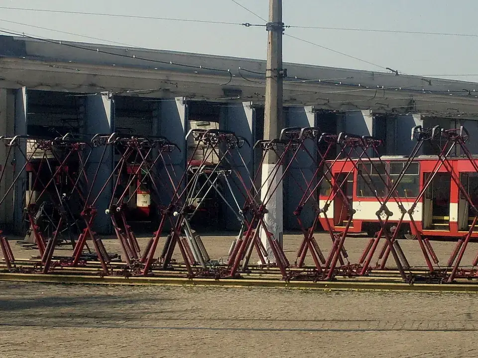
Co skupujemy z branży kolejowej i tramwajowej?
Nakładki stykowe pantografów (ślizgacze)
Sam zużyty materiał grafitowy i kompletne listwy ślizgowe w obudowach aluminiowych oraz miedzianych. Nakładki czyste (węglowo-grafitowe) i metalizowane (impregnowane miedzią lub ołowiem).
Szczotki węglowe i elektroszczotki
Zużyte szczotki grafitowe i grafitowo-miedziane (z linkami miedzianymi i bez) z silników trakcyjnych, prądnic i przetwornic lokomotyw (m.in. EU07, ET22, EP09) oraz EZT (EN57 i inne).
Szczotki uziemiające (maźnicze)
Zużyte elementy odprowadzające prąd z zestawów kołowych i maźnic wagonów oraz lokomotyw.
Elementy ślizgowe i złom grafitowy
Tuleje, pierścienie i wkładki kompozytowo-grafitowe z układów biegowych, wózków i rozjazdów, a także połamane płyty, pręty, elektrody oraz pył i wióry z obróbki grafitu.
Dla kogo jest ta oferta?
- sekcje utrzymania taboru i lokomotywownie (przewoźnicy pasażerscy i towarowi)
- Zakłady Naprawcze Taboru Kolejowego (ZNTK) i firmy modernizujące pojazdy szynowe
- Miejskie Zakłady Komunikacyjne - zajezdnie tramwajowe i trolejbusowe
- firmy serwisujące infrastrukturę kolejową i sieć trakcyjną
Dlaczego warto oddać grafit do naszego skupu?
- Atrakcyjne ceny skupu - odzyskujemy czysty węgiel/grafit oraz metale (miedź, aluminium), co pozwala oferować atrakcyjne stawki za tonę.
- Legalna utylizacja i dokumentacja BDO - przejmujemy odpowiedzialność za odpad z chwilą odbioru.
- Logistyka po naszej stronie - kontenery albo odbiór na paletach (big-bagi, skrzyniopalety) z dowolnego miejsca w kraju.
Na docelowej stronie: osobna zakładka „Kolej i tramwaje”.
Pozostałe materiały grafitowe
- odpady poprodukcyjne z obróbki grafitu
- zużyte elektrody grafitowe
- tygle i formy grafitowe
- zużyte elementy grafitowe z warsztatów i zakładów przemysłowych
- materiały grafitowe z procesów technologicznych i produkcyjnych
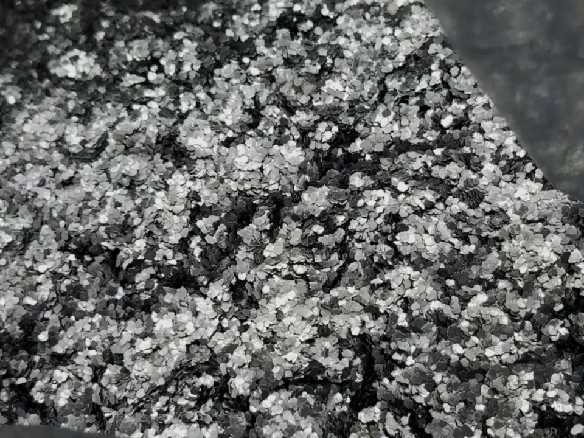
Z kim współpracujemy?
- firmy serwisujące turbiny wiatrowe onshore i offshore
- operatorzy farm wiatrowych
- zakłady naprawcze taboru kolejowego
- lokomotywownie i zaplecza techniczne
- zakłady wykonujące przeglądy i remonty P4 oraz P5
- zajezdnie tramwajowe i trolejbusowe
- firmy utrzymujące sieci trakcyjne i infrastrukturę kolejową
- producenci i serwisy silników elektrycznych
- zakłady przemysłowe i warsztaty elektromechaniczne
Szczególnie interesują nas regularne dostawy materiałów z okresowych przeglądów, wymiany podzespołów i remontów.
Wycena i warunki współpracy
Wartość materiałów zależy od rodzaju, producenta, składu chemicznego, zawartości metali i ilości. Szczególną wartość mogą mieć materiały grafitowo-miedziane, miedziano-węglowe i inne kompozyty z metalami kolorowymi. Każdą partię wyceniamy indywidualnie.
- skup małych i dużych partii
- indywidualne warunki cenowe
- możliwość stałej współpracy B2B
- uzgodnienie odbioru i transportu
- wyceny na podstawie zdjęć, oznaczeń i specyfikacji
- dostawcy z Polski i zagranicy
Partie, które do nas trafiają
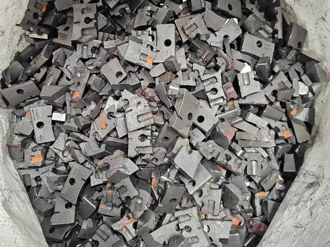
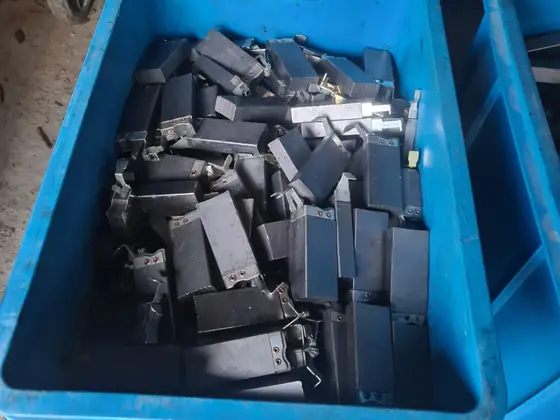
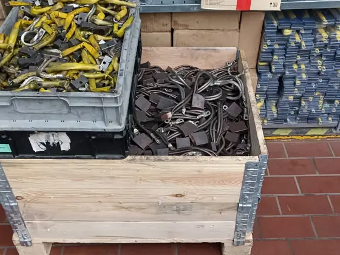
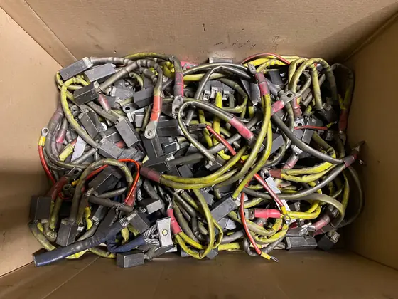
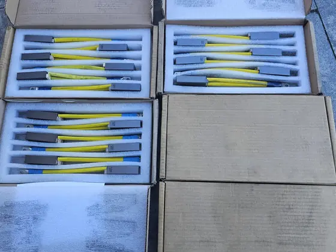
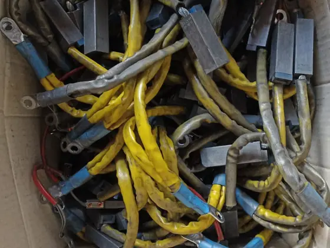
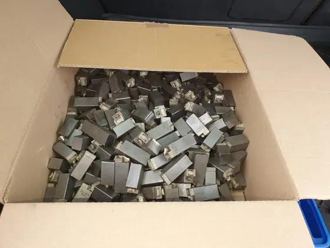
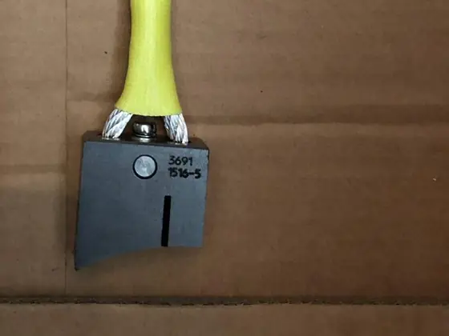
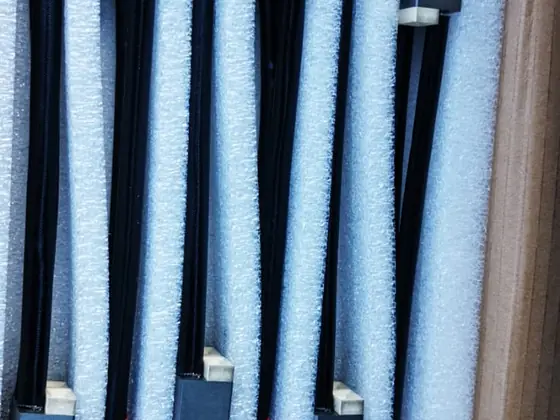
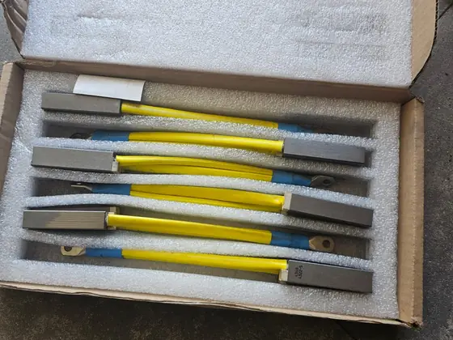
Pytania i odpowiedzi
Jakie szczotki węglowe skupujecie?
Szczotki węglowe, grafitowe, grafitowo-miedziane, miedziano-węglowe oraz węglowo-metalowe, stosowane m.in. w generatorach turbin wiatrowych, silnikach trakcyjnych i urządzeniach przemysłowych.
Czy skupujecie zużyte nakładki pantografowe?
Tak. Interesują nas zużyte nakładki grafitowe, węglowe i metalizowane, w tym nakładki miedziowane oraz kompletne listwy pantografowe z profilami aluminiowymi lub miedzianymi.
Czy można sprzedać szczotki grafitowo-miedziane?
Tak. Szczotki grafitowo-miedziane i miedziano-węglowe należą do materiałów, którymi jesteśmy zainteresowani. Wycena zależy od składu, rodzaju i ilości materiału.
Czy przyjmujecie małe ilości?
Tak. Rozpatrujemy zarówno mniejsze partie warsztatowe, jak i większe dostawy hurtowe. Warunki odbioru ustalamy indywidualnie.
Jak przygotować materiał do wyceny?
Najlepiej przesłać zdjęcia, oznaczenia producenta lub numer katalogowy, orientacyjną wagę albo liczbę sztuk oraz lokalizację materiału.
Propozycja logo Richter
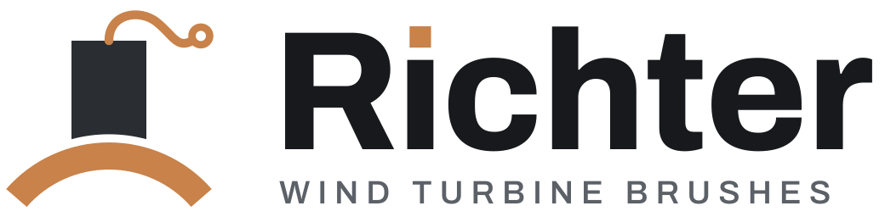
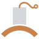
Znak słowny Richter, bo z tą nazwą klienci już kojarzą firmę, oraz sygnet: szczotka węglowa dociśnięta do miedzianego pierścienia ślizgowego, z miedzianą linką. Kropka nad „i” to mały blok szczotki w kolorze miedzi. Pod nazwą rozwinięcie WTB - Wind Turbine Brushes. Znak działa na ciemnym i jasnym tle, a sam sygnet jako ikona strony i profilu.
Skontaktuj się z nami - otrzymaj wycenę
Masz zużyte szczotki węglowe, grafitowo-miedziane, nakładki pantografowe, pierścienie ślizgowe lub inne elementy z grafitem i metalami? Nie wyrzucaj ich bez wcześniejszej wyceny. Prześlij zdjęcia, oznaczenia producenta, orientacyjną ilość i lokalizację materiału - przygotujemy indywidualną ofertę skupu.
Skupujemy - wyceniamy - odzyskujemy surowce - recyklingujemy